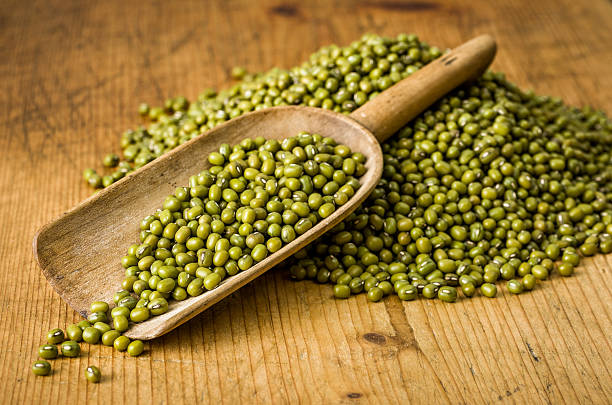

LIVE A HEALTHIER
WHOLESOME LIFE

PURE & ORGANIC
EAT
HEALTHY
STAY
HEALTHY
LIVE A HEALTHIER
WHOLESOME LIFE
PURE & ORGANIC
EAT
HEALTHY
STAY
HEALTHY
SANMATI PREMIUM
‘Sanmati Premium’ has grown on the principles of health, ecology, and care. We believe in working with a large number of accredited farmers who do not use or promote the use of pesticides and genetically modified seeds to grow their produce. We aim to give our customers a healthy chemical-free meal for the perfect nutrition.
Our Organic Range
Pulses
Grains
Spices
Why Sanmati Premium?
No Chemicals & Pesticides
We don’t use artificial fertilisers or additives in our food
High Nutritional Value
Organic foods preserve far more natural vitamins and minerals
Preserves the Environment
Sustainable farming ensures soil conversation & reduced air pollution
ALL PRODUCTS -
Organic Rice | Organic Cereals & Grains | Organic Flours | Organic Pulses | Organic Sugar & Jaggery |
Organic Whole Spices | Organic Masala Blends | Organic Super Foods & Health Foods | Organic Tea & Coffee |
Organic Oils, Honey & Pastes | Natural Salts | Organic Ground Spices | Organic Dry Fruits
Sanmati Premium Pvt. Ltd. 332,Hukumchand colony Indore 252002, India
© Copyright 2020 - Sanmati Premium. All Rights Reserved.